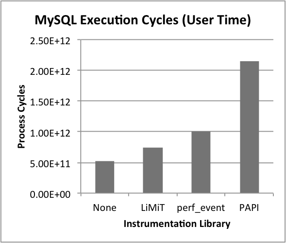

LiMiT -- Lightweight MonItoring Toolkit -- is a patch for the Linux kernel and userland library which enables direct userspace access to Intel's hardware performance counters for lightweight, precise performance measurements. A paper detailing the implementation of LiMiT and several case studies was presented at ISCA 2011.
LiMiT -- A tool for reading out performance counters in nanoseconds
 Current Linux tools for accessing performance counters viz. Perfmon2 (and thus PAPI) require system calls to read out counters. System calls usually take microseconds to execute and can perturb execution. LiMiT enables reading performance counters in userspace, decreasing read time to 5 instructions taking about 37 cycles on a modern x86 processor -- which is in the nanoseconds range.
{kind=link}
The chart on the right shows an example of the overheads when instrumenting pthread locking calls in MySQL. In a direct comparison benchmark (3 counters with 10e7 reads each, no other code), we see the following:
| PAPI-C | perf_event | LiMiT | Speedup over PAPI | Speedup over perf_event | |
| Wall Time | 7.87s | 31.44s | 0.34s | 92x | 23.1x |
| User Time | 0.53s | 1.26s | 0.34s | 3.7x | 1.56x |
| Kernel Time | 7.30s | 30.10s | 0.0s | ∞ | ∞ |
Usage
LiMiT has several usage modes, however the most useful is the C API. In this mode, you include limit.h in your source code and link against the LiMiT library. The API provides a set of functions to set up/close hardware performance counters as well as read them. Routines for reading are inlined to decrease latency to 5 instructions.
Usage Example: Measurement of branch misprediction during a function call.
// Compile with: gcc -O3 -o hello hello.c -llimit -ldl
#include <limit.h>
#include <stdint.h>
#include <stdio.h>
#define str1 "Hello World, Hello World, Hello World"
#define str2 "HELLOWORLDHELLOWORLDHELLOWORLDHELLOWO"
const char* testStr = str1; //Also try str2
uint64_t uppersFound = 0, lowersFound = 0;
void function_to_watch(void) {
size_t i;
const char* c = testStr;
while (*c != 0) {
if (isupper(*c))
uppersFound++;
else if (islower(*c))
lowersFound++;
c++;
}
}
int main(void) {
uint64_t br_last, brm_last, c, br, brm;
size_t i;
lprof_init(3, EV_CYCLES, EV_BRANCH, EV_BRANCH_MISS);
for (i=1; i<=30; i++) {
lprof(2, br_last); //Optional:
lprof(3, brm_last); // sample just before call
function_to_watch(); // Do something
lprof(1, c); //Get cumulative cycles
lprofd(2, br, br_last); //Get delta branches
lprofd(3, brm, brm_last); //Get delta mispreds
printf("At Cycle: %7lu, Br Misprediction: %lf\n",
c, 100.0*((double)brm)/br);
}
lprof_close();
}
Download & Installation
Download and Installation